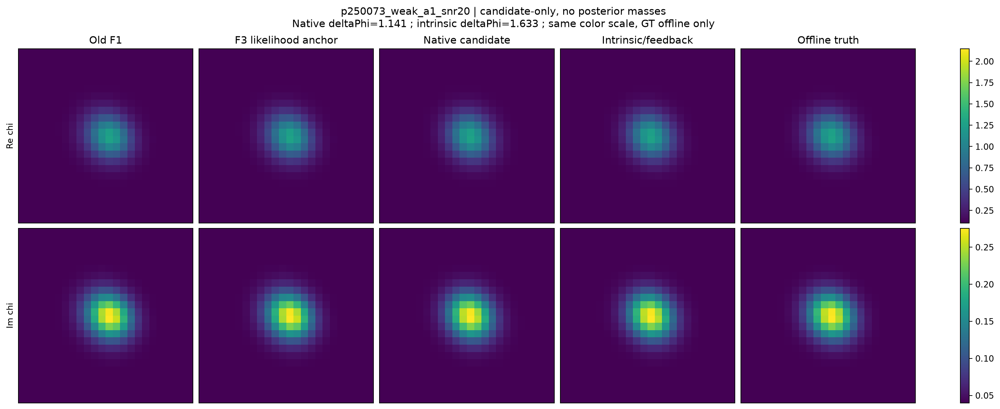
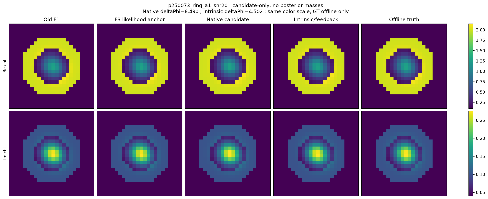
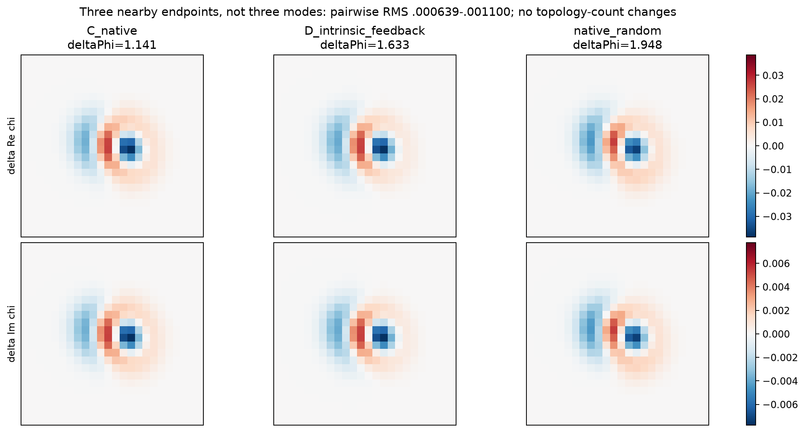
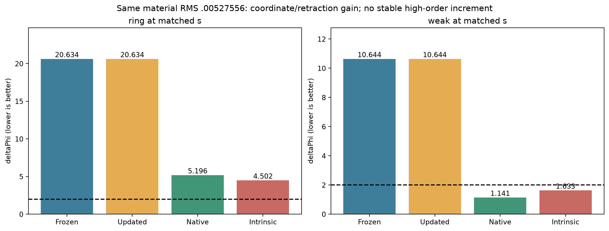
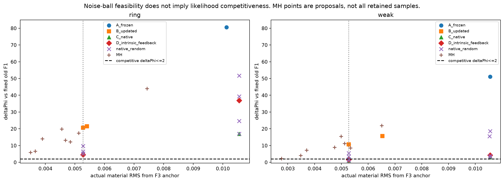
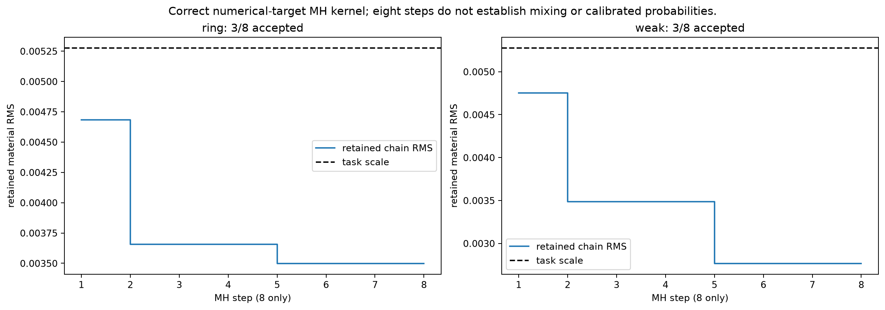
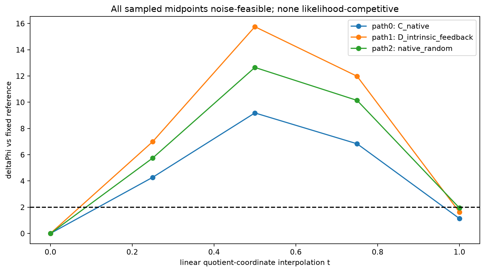
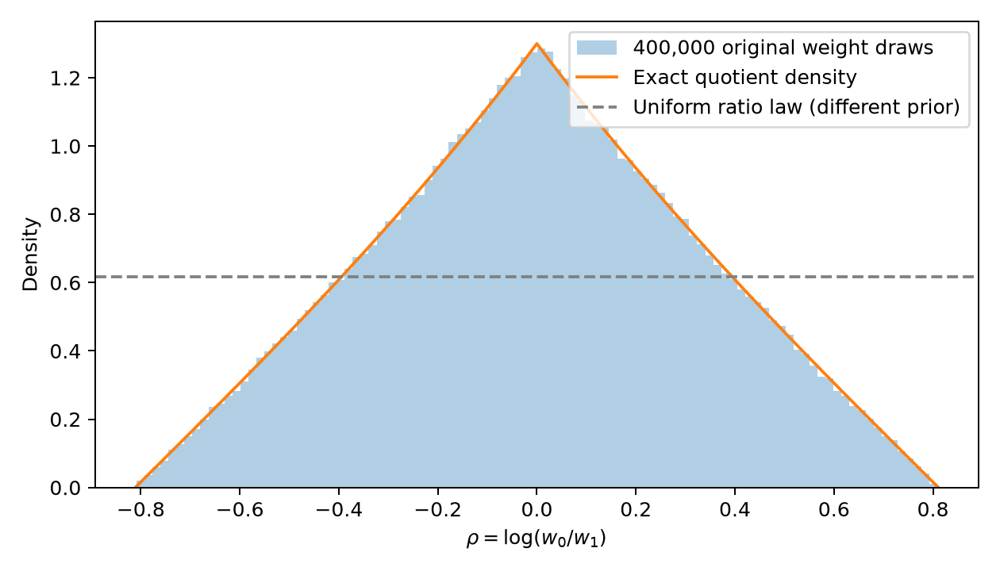

Research F3 · 实际材料、竞争likelihood与路径
所有候选来自真实full-Maxwell求值；非后验模式图库。GT仅离线评分，材料图共用实部/损耗色标。
weak：基础材料与候选

有任务尺度竞争端点，但只是同一小材料区域。native代表按Φ选择，不按GT误差选择。PDFring：反例保留

原基础材料已经很好；当前候选没有达到ΔΦ≤2。不能用noise-ball通过代替概率重要性。PDF三个端点的真实材料差分

数值不同，彼此距离小于预注册任务尺度；多尺度拓扑计数没有改变，不是三个worlds。PDF相同材料RMS的四臂比较

普通材料retraction优于冻结切向；没有稳定高阶增量。第二目标的距离失败在原始表单独记录。PDF所有端点与任务阈值

MH散点是proposal，不能把被拒绝的点算成保留链或teacher；没有residual-softmax概率。PDF真实保留链，包含重复状态

冻结对角反射proposal与完整likelihood/prior接受；8步不足以评估混合或后验质量。PDF端点之间的固定参数线段

后续冻结的9个中点诊断，无GT、无优化。全部noise-feasible、全部不competitive；不排除其他路径。PDF原权重诱导的商先验

原8维Uniform不是7维Uniform；比例边界密度为0，材料闭支持仍合法。
推导与独立数值核验